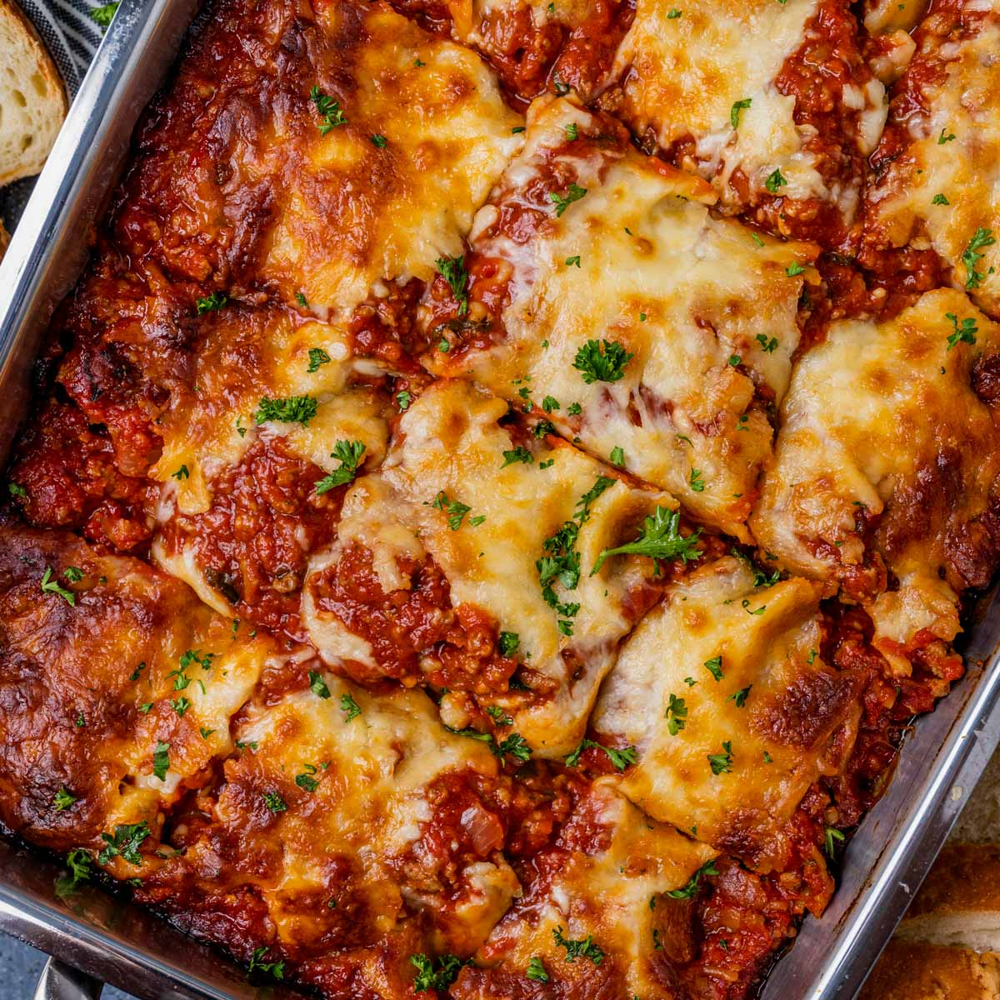

Lasagna
Ultimate Layered Lasagna Delight: A Savory Culinary Adventure

Description:
Indulge in the comforting layers of our Classic Three-Cheese Lasagna. With perfectly cooked lasagna noodles, rich tomato sauce, a medley of three delectable cheeses, and savory ground beef, this dish is a culinary masterpiece that's sure to satisfy your taste buds.
Ingredients
- 12 lasagna noodles
- 1 pound (450g) ground beef
- 1 onion, finely chopped
- 2 cloves garlic, minced
- 1 can (28 ounces/800g) crushed tomatoes
Directions
- Preparation of Ingredients:
Cook the lasagna noodles according to the package instructions. Drain and set aside.
In a skillet, sauté finely chopped onion and minced garlic until fragrant. Add ground beef and cook until browned. Drain excess fat.
Combine crushed tomatoes, tomato sauce, dried basil, dried oregano, salt, and pepper in a bowl. Simmer the sauce.
- Create Cheese Filling:
In a mixing bowl, blend ricotta cheese, a beaten egg, and chopped fresh parsley. This creates a creamy and flavorful cheese filling.
- Layering the Lasagna:
Lightly grease a 9x13-inch baking dish with cooking spray.
Start with a thin layer of meat sauce at the bottom.
Place a layer of cooked lasagna noodles on top of the sauce.
Spread a generous layer of the ricotta cheese mixture over the noodles.
Sprinkle a layer of shredded mozzarella and grated Parmesan cheese on top of the ricotta.
Repeat the layering process: meat sauce, noodles, ricotta mixture, and cheeses, creating multiple layers.
Baking:
Cover the baking dish with aluminum foil to prevent excessive browning.
Bake the lasagna in a preheated oven at 375°F (190°C) for about 25 minutes.
Final Touches and Serving:
Remove the foil and continue baking for an additional 15-20 minutes until the cheese is melted and golden.
Take the lasagna out of the oven and let it rest for around 10 minutes before slicing.
Garnish with extra chopped parsley for a fresh burst of flavor.
Serve portions of the Classic Three-Cheese Lasagna to your guests and enjoy the delicious layers!
Following these five directions will guide you through preparing a delightful Classic Three-Cheese Lasagna meal that's bound to impress your guests and satisfy your taste buds.
- Baking:
Cover the baking dish with aluminum foil to prevent excessive browning.
Bake the lasagna in a preheated oven at 375°F (190°C) for about 25 minutes.
- Final Touches and Serving:
Remove the foil and continue baking for an additional 15-20 minutes until the cheese is melted and golden.
Take the lasagna out of the oven and let it rest for around 10 minutes before slicing.
Garnish with extra chopped parsley for a fresh burst of flavor.
Serve portions of the Classic Three-Cheese Lasagna to your guests and enjoy the delicious layers!